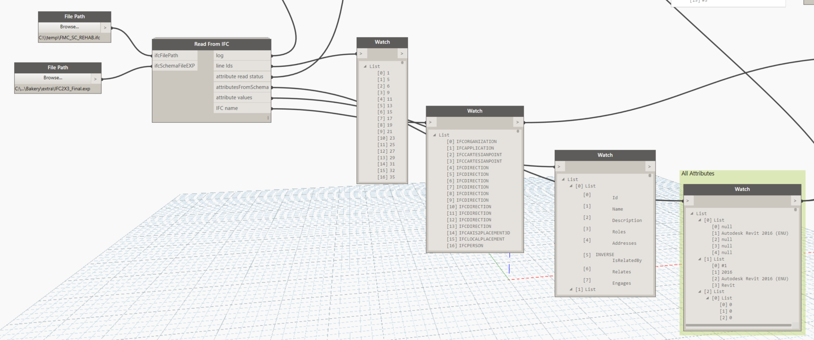
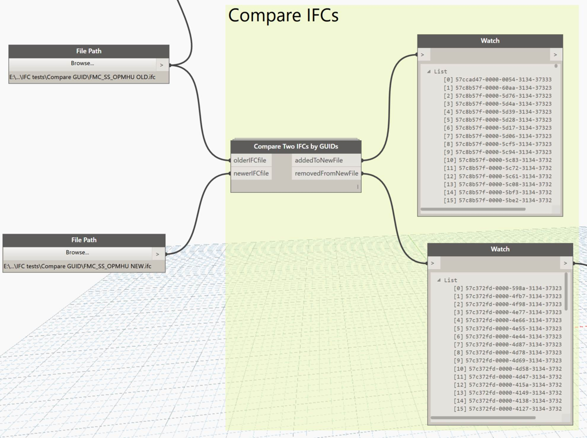
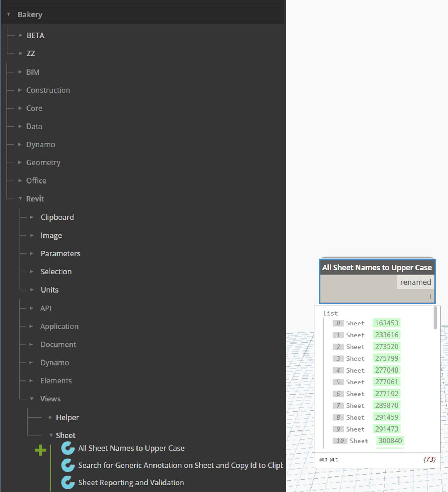

Black Grid / Dynamo & Revit automation
Bakery for Dynamo¶
A practical toolkit for the work between modelling and delivery. Reusable Dynamo nodes and graphs for managing Revit models, working with BIM data and connecting information across files.

Built from everyday BIM problems¶
Bakery grew out of Luke's hands-on work with Revit and BIM delivery: finding the right elements, checking model information, managing linked files and making the same change consistently across many views or sheets. The useful routines became reusable Dynamo nodes, then a shared package that others could inspect, combine and adapt.
The collection spans small conveniences and more involved automation. A node can tidy sheet names; a graph can gather information from linked models, reshape spreadsheet data or help investigate differences between IFC exports. The common idea is to make a repeatable task understandable enough to run again, rather than rebuild it for every project.
Bakery brings together Luke's custom work, including XML processing with Python's ElementTree, and adaptations of community tools. Packages such as Clockwork, archi-lab and LunchBox are part of that foundation. The original project introduction explains this approach, and the repository preserves the graph and node source alongside supporting package versions.
What Bakery helps you do¶
- Find and check model information
- Collect elements by category, workset or parameter; inspect shared-parameter GUIDs; find duplicate values and report model conditions that need attention.
- Manage views and sheets
- Work with view disciplines, filters, templates, revisions and sheet names. Turn a repeated documentation task into a graph with explicit inputs.
- Understand linked models
- Gather external-file references, linked-element information and workset details. The example graphs also include BIM 360 path harvesting and reloading tools.
- Work across IFC and coordination data
- Read IFC information, extract identifiers, convert between IFC and .NET GUID formats, and compare identifier sets between two files.
- Connect files, tables and parameters
- Read and reshape Excel, CSV, XML and text data; clean strings and lists; move information into forms that a Revit workflow can use.
- Build geometry-driven routines
- Use room boundaries, curves, points and element geometry in modelling and review tasks, including floor creation and section-box workflows.
Browse the documented node groups, or explore the Bakery articles on Dynamo Nodes for individual examples.
See the tools in use¶
These are original screenshots from Luke's Dynamo Nodes articles, showing the package and workflows as they were documented.
Compare IFC identifiers¶
Give Compare Two IFCs by GUIDs an older and a newer IFC file. Its outputs identify GUIDs added to, or removed from, the newer file: a focused way to investigate changes in the identifier sets.

Full-size screenshot ↗
Standardise sheet names¶
All Sheet Names to Upper Case handles a small but repetitive documentation job in one operation. The screenshot shows the node in Bakery's library and its returned list of renamed sheets.

Full-size screenshot ↗
The same practical approach appears in the view-discipline tools, which enumerate and set disciplines across views, and view-filter tools, which apply filters to a view.
What is in the repository?¶
The BakeryForDynamo repository contains more than the package itself:
- Versioned Bakery collections. Separate
BakeryForDynamo1.3xandBakeryForDynamo2.0xfolders preserve the package layouts, custom-node definitions and additional resources. - Supporting package snapshots. Companion folders preserve versions of packages that Bakery workflows may reference, making their dependencies visible alongside the nodes.
- Example Dynamo graphs. The
dynfolder includes BIM 360 path-harvesting and path-reloading examples, alongside a contributed section-from-line graph credited to Nick Culley in its filename. - Additional resources. The repository also includes node icons and a separate RollingPin node collection.
Working with the archive today¶
Bakery's public repository preserves historical Dynamo 1.3x and 2.0x collections. Start with the versioned folder and its dependencies when inspecting or adapting a workflow for your Revit/Dynamo environment. These snapshots are a reference for the original tooling, rather than a statement of compatibility with every current release.
Explore Bakery¶
The source is the place to inspect the implementation. Dynamo Nodes provides the explanations, node index and worked examples that put the tools in context.